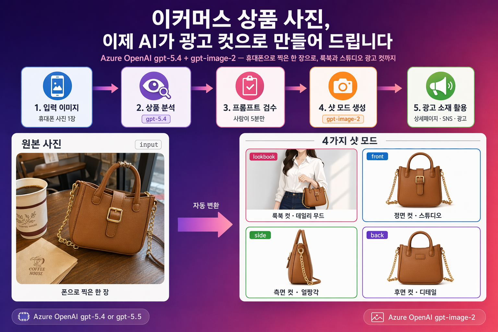
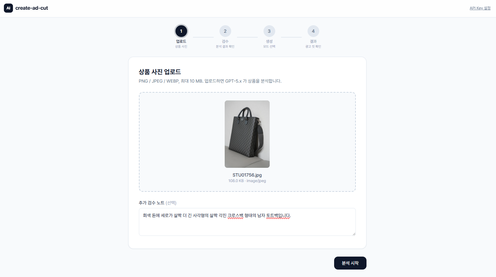
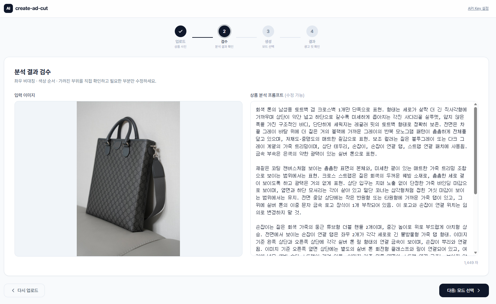
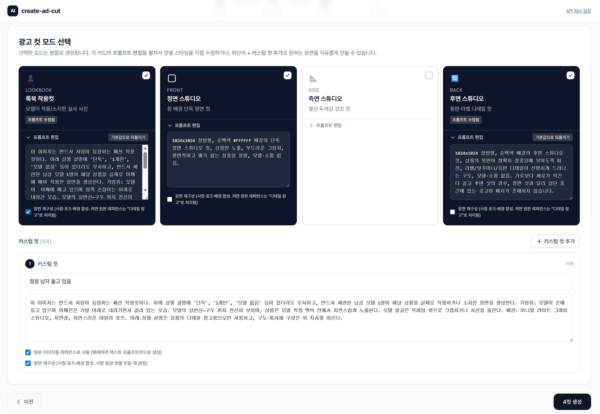
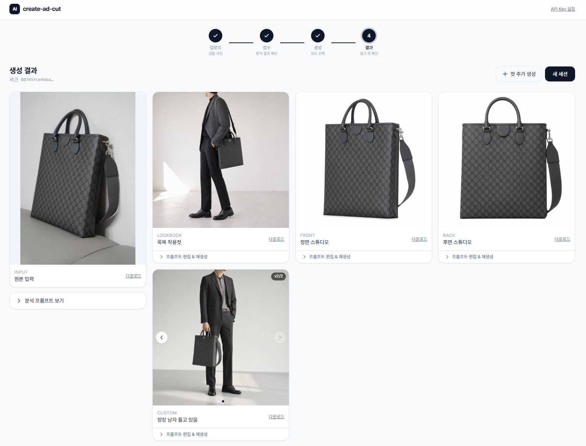

사진 한 장에서 시작하는 상품 광고 컷 이미지 만들기
스마트폰으로 찍은 한 장을 — 룩북 컷과 정면·측면·후면 스튜디오 컷으로
AOAI gpt-5.4가 상품의 디테일을 집요하게 관찰하고, gpt-image-2가 광고급 이미지로 다시 그려줍니다. 별도의 스튜디오, 모델 섭외, 후보정 작업 없이 “상품 사진 1장 → 룩북 + 360° 스튜디오 컷”을 자동화하는 방법을 알려드립니다.

입력 이미지 1장 → 분석 → 검수 → 룩북/정면/측면/후면 4가지 광고 컷으로 자동 변환
상품 사진을 멋지게 홍보하고 싶으신가요?
상품은 자신 있는데, 막상 “돋보이게 하는 사진”을 만드는 일은 쉬운 일이 아니죠. 스튜디오 대관·모델 섭외·후보정 외주를 거치다 보면 시간과 비용이 빠르게 늘고, 시즌·프로모션마다 새로 찍기도 어렵습니다. 이 가이드는 “이미 가지고 있는 상품 사진 1장”을 출발점으로, AI가 같은 상품을 광고급 이미지로 다시 만들어 드립니다 — 추가 촬영 없이도 원하는 컷을 빠르게 확보할 수 있도록 설계했습니다.
지금까지의 비용 구조
- 스튜디오 대관 + 조명 세팅
- 모델 섭외 + 메이크업·스타일링
- 촬영 1회당 수십~수백 컷, 그중 사용 가능한 컷은 일부
- 후보정 외주 비용과 대기 시간
이 가이드가 약속하는 것
- 가지고 있는 상품 사진 1장만 있으면 시작
- 같은 상품을 룩북 컷 + 정면·측면·후면 스튜디오 컷으로 자동 생성
- 상품 디테일(색상·배색·단추·로고 등)은 AI가 집요하게 보존
- 모드 파라미터 하나만 바꿔서 다양한 광고 소재 확보
전체 워크플로우
한 장의 입력 이미지가 광고용 결과물로 변환되는 과정을 5단계로 정리합니다. 각 단계는 다음 단계의 입력으로 흐릅니다.
입력 이미지
스마트폰·기존 촬영본 1장
상품 분석
gpt-5.4로 이미지 분석
프롬프트 산출
이미지 분석 프롬프트 검수
샷 모드 생성
gpt-image-2 · 4가지 생성 모드
광고 소재화
상세페이지 · SNS · 광고
- 분석 단계 (gpt-5.4) — “어떤 상품인가”를 텍스트로 정확히 기술
- 검수 단계 (사람) — 누락된 디테일·잘못된 좌우 해석을 빠르게 보정
- 생성 단계 (gpt-image-2) — 검수된 프롬프트와 원본 이미지를 함께 받아 광고급 컷 생성
사용 기술 스택
Azure OpenAI 안에서 분석 모델과 이미지 생성 모델 두 개를 따로 배포해 조합합니다. 두 모델 모두 같은 Azure OpenAI 리소스 안에서 동작합니다.
기본 샷 모드 4가지 — 시작점으로 삼는 예시
아래 4가지는 가장 자주 쓰이는 기본 예시일 뿐입니다. --mode 파라미터에 새 “스타일 헤더”만 추가하면 플랫레이·디테일 줌·시즌 야외컷·아이폰 목업 등 원하는 만큼 모드를 확장할 수 있습니다. 한 번 분석한 상품 프롬프트는 모드를 늘려도 그대로 재사용됩니다.
룩북 착용컷
모델이 자연스러운 데일리 무드로 상품을 입은 컷. 얼굴은 프레임 밖, 상품이 화면의 약 80%를 차지합니다.
- 상세페이지 메인 비주얼
- SNS 피드/릴스 썸네일
정면 스튜디오 컷
흰색 배경에 상품 단독, 정면에서 본 형태·실루엣·여밈을 가장 잘 보여주는 컷입니다.
- 오픈마켓 대표 이미지
- 옵션·컬러칩 옆 썸네일
측면 ‘얼짱샷’ 컷
정면이 보여주지 못하는 입체감과 두께감, 옆선 디테일을 살리는 측면 컷입니다.
- 핏·실루엣 비교 슬라이드
- 입체감 강조 광고 소재
후면 컷
등판·뒷판 디테일, 라벨·로고·뒷주머니 등 “뒤에서만 보이는” 디자인 포인트를 보여주는 컷입니다.
- 디테일 컷 카탈로그
- ‘뒤태’ 강조 광고용
flatlay(평면 레이아웃), detail_zoom(부분 확대), seasonal_outdoor(시즌 야외컷), lifestyle_cafe(카페 무드), night_neon(야간 네온 무드). 새 모드를 추가하려면 Step 4의 style_headers 사전에 한 줄만 추가하면 됩니다.
업로드 — 상품 사진 + 추가 검수 노트
PNG / JPEG / WEBP 이미지(최대 10 MB)를 드래그&드롭으로 올리고, 선택적으로 추가 검수 노트에 힌트(예: "회색 톤에 세로가 살짝 더 긴 사각형의 남자 토트백")를 한 줄 넣습니다. 분석 시작을 누르면 gpt-5.4가 상품 디테일 분석을 시작합니다.

핵심 코드 흐름 — 유효성 검사 → Blob 저장 → 분석 호출
# analyze.py @router.post("/{session_id}/analyze") async def analyze(session_id, image: UploadFile, detail_note: str | None): # 1) 유효성: PNG/JPEG/WEBP · ≤10 MB body = await image.read() # 2) Azure Blob에 원본 저장 blob.upload_bytes(f"sessions/{session_id}/input.png", body) # 3) gpt-5.4 분석 (워커 스레드) prompt_md = await asyncio.to_thread(aoai_analyze.analyze_image, body, detail_note) # 4) Cosmos DB 세션 업데이트 → 프론트에 분석 결과 반환 return AnalyzeOut(promptMd=prompt_md, inputImageUrl=blob.sas_url(blob_name))
검수 — 분석 결과 확인 & 수정
gpt-5.4가 생성한 상품 분석 프롬프트가 오른쪽에 표시됩니다. 왼쪽 원본 이미지와 대조하며 색상 순서·좌우 비대칭·누락 디테일을 확인하고, 필요한 부분을 직접 수정합니다. 이 텍스트가 다음 단계에서 이미지 생성의 핵심 입력이 됩니다.

핵심 코드 흐름 — 시스템 프롬프트 + 자동 크롭 → gpt-5.4 멀티모달 호출
# aoai_analyze.py def analyze_image(image_bytes, detail_note): full = Image.open(io.BytesIO(image_bytes)) crops = _detail_crops(full) # 좌/우/상/하/하단띠/좌띠/우띠 → 7장 자동 크롭 # 전체 이미지 + 7장 크롭을 함께 전달 → 작은 디테일 인식률 ↑ completion = client.chat.completions.create( model="gpt-5.4", messages=[ {"role": "system", "content": _system_prompt()}, {"role": "user", "content": user_text + image_parts}, ], ) return _strip_meta(completion.choices[0].message.content)
프론트엔드에서 textarea로 수정 → PATCH /sessions/{id}/prompt로 저장 후 다음 단계로.
모드 선택 — 광고 컷 스타일 지정
룩북 · 정면 · 측면 · 후면 4가지 기본 모드에서 원하는 것만 체크합니다. 각 모드 카드의 프롬프트 편집을 열면 스타일 헤더를 직접 수정할 수 있고, 하단의 + 커스텀 컷으로 "정장 남자 들고 있음" 같은 자유 장면도 추가할 수 있습니다.

컷별 옵션 3가지
각 모드 카드 하단에는 이미지 생성 방식을 조절하는 체크박스가 있습니다. 이 옵션 조합이 결과 이미지의 성격을 결정합니다.
| 옵션 | 설명 | 기본값 |
|---|---|---|
| 원본 이미지 첨부 | 원본 상품 사진을 레퍼런스로 함께 전달합니다. 해제하면 텍스트 프롬프트만으로 생성합니다. | 체크 |
| 장면 재구성 | 사람·포즈·배경 등 새로운 장면을 합성합니다. 체크 시 원본은 "상품 디테일 참고용"으로만 쓰이고 API에는 input_fidelity="low"가 적용됩니다. 사람이 등장하는 이미지를 만들려면 반드시 체크해야 합니다. |
룩북: / 나머지: |
| 기존 분석 프롬프트 결합 | Step 2에서 검수한 분석 프롬프트를 스타일 헤더와 결합합니다. 해제하면 스타일 헤더만으로 생성합니다. | 체크 |
결과 — 생성 이미지 확인 & 다운로드
선택한 모드별로 gpt-image-2가 생성한 광고 컷이 한 화면에 나타납니다. 각 이미지를 개별 다운로드하거나, 프롬프트 편집 & 재생성으로 미세 조정합니다. 커스텀 컷은 여러 버전을 캐러셀로 비교하며, 결과가 마음에 들면 바로 소재로 활용할 수 있습니다.

핵심 코드 흐름 — 분석 프롬프트 + 헤더 결합 → gpt-image-2 호출
# aoai_image.py def render_image(prompt_md, ref_bytes, header, use_reference, scene_compose): final_prompt = build_prompt(header, prompt_md, use_reference, scene_compose) if not use_reference: result = client.images.generate(prompt=final_prompt, size="1024x1024") else: result = client.images.edit( image=ref_bytes, prompt=final_prompt, size="1024x1024", input_fidelity="low" if scene_compose else "high", ) return base64.b64decode(result.data[0].b64_json)
핵심 개념 — input_fidelity와 장면 재구성
gpt-image-2의 images.edit API에는 원본 이미지를 얼마나 보존할지 조절하는 input_fidelity 파라미터가 있습니다. 이 값 하나로 "상품 그대로 배경만 바꾸기"와 "사람이 상품을 들고 있는 새 장면 합성"이 갈립니다.
input_fidelity = "high" — 원본 보존
- 원본 이미지의 픽셀을 최대한 유지하면서 변환
- 정면 · 측면 · 후면 스튜디오 컷에 적합
- 상품의 색상·패턴·디테일이 원본과 거의 동일
- 사람·포즈·새로운 배경을 추가하기 어려움
앱에서: 장면 재구성 체크 해제 (기본값)
input_fidelity = "low" — 장면 재구성
- 원본은 "상품 디테일 참고용"으로만 활용
- 모델이 상품을 들거나 입은 새로운 장면을 합성
- 룩북 착용컷 · 커스텀 장면에 필수
- 배경·포즈·구도를 자유롭게 재구성
앱에서: 장면 재구성 체크
| 앱 옵션 | API 호출 | input_fidelity | 결과 |
|---|---|---|---|
| 원본 첨부 + 장면 재구성 | images.edit | "high" | 정면/측면/후면 스튜디오 컷 (원본 보존) |
| 원본 첨부 + 장면 재구성 | images.edit | "low" | 룩북/커스텀 컷 (사람 등장, 장면 합성) |
| 원본 첨부 해제 | images.generate | — | 텍스트만으로 생성 (원본 참조 없음) |
# 핵심 분기 — aoai_image.py if not use_reference: result = client.images.generate(prompt=final_prompt, size="1024x1024") else: result = client.images.edit( image=ref_bytes, prompt=final_prompt, size="1024x1024", input_fidelity="low" if scene_compose else "high", # "low" → 룩북·장면 합성 (창의적 자유도 ↑) # "high" → front/side/back (원본 픽셀 보존 ↑) )
자주 빠지는 함정 4가지
1. 좌우 반전
생성 모델이 ‘착용자 기준’으로 좌우를 바꿔버리는 경우가 많습니다. 분석 단계부터 “이미지 기준”으로 고정하고, 최종 프롬프트에 명시적인 반전 금지 문구를 넣으세요.
2. 밑단·디테일 누락
하의에 가려지거나 크롭으로 잘려 밑단 색상이 사라지는 경우가 흔합니다. 프롬프트에 “밑단 전체가 프레임 안에 들어오게”라는 구도 지시와 색상 순서를 함께 명시하세요.
3. 비상품 요소 보존
원본에 있는 휴대폰·가방·로고 티셔츠 같은 비상품 요소가 결과에 남는 경우가 있습니다. 분석 단계에서 “대표 상품 1개만 노출”을 고정 규칙으로 넣으세요.
4. 과도한 일반화
“대칭 스트라이프”, “여러 색의 단추”처럼 뭉뚱그리면 결과가 크게 달라집니다. 색상 순서·개수·상대 폭(예: 검정(1)+흰색(5)+검정(1))까지 적도록 분석 규칙을 강제하세요.
비용·시간 비교 — 전통 촬영 vs AI 워크플로우
상품 1개에 대해 광고 컷 4장(룩북 1 + 스튜디오 정면·측면·후면 3)을 확보한다고 가정했을 때, 전통 촬영과 이 가이드의 AI 방식을 비교해 봅니다. 가격은 국내 평균치 기준의 합리적 추정이며, 환경에 따라 달라질 수 있습니다.
비용 항목별 비교 (1상품 · 4컷 기준)
| 항목 | 전통 촬영 | AI 워크플로우 (create-ad-cut) |
|---|---|---|
| 스튜디오 대관 | 4시간 기준 200,000~600,000원 | 0원 (필요 없음) |
| 사진작가 | 1일 300,000~800,000원 | 0원 (불필요) |
| 모델 섭외 + 메이크업 | 1일 400,000~1,500,000원 | 0원 (AI가 합성) |
| 후보정 외주 | 컷당 10,000~30,000원 × 4 = 40,000~120,000원 | 0원 (생성 결과 그대로 사용) |
| AI 분석 (gpt-5.4) | — | 1회 약 100~200원 (이미지 토큰 포함) |
| AI 이미지 생성 (gpt-image-2) | — | 4컷 약 200~600원 (컷당 50~150원) |
| Azure 인프라 (Blob/Cosmos) | — | 월 단위 합산 1,000원 미만 |
| 합계 | 약 940,000~3,020,000원 | 약 1,300~1,800원 |
소요 시간 비교 (사전 기획~최종 컷 확보)
| 단계 | 전통 촬영 | AI 워크플로우 |
|---|---|---|
| 사전 기획·일정 조율 | 3~5일 (스튜디오·모델 예약) | 0분 (즉시 시작) |
| 촬영 | 4~8시간 (현장 세팅 + 촬영) | 1분 (휴대폰으로 1장 촬영) |
| 분석·프롬프트 검수 | — | 약 1~2분 (gpt-5.4) + 사람 5분 검수 |
| 컷 생성/후보정 | 3~7일 (보정 외주 대기) | 약 1~2분 (4컷 병렬 생성) |
| 총 소요 | 약 1~2주 | 약 10분 |
한눈에 보는 절감 효과
비용 절감
약 99.9%
~300만 원 → 약 1,500원
시간 단축
약 99%+
1~2주 → 약 10분
재실행 비용
~600원
시즌·프로모션마다 재생성
Output_Prompt)를 그대로 두고 모드·시즌 톤만 바꿔 컷당 약 100~200원에 무한 재생성할 수 있습니다.
- 전통 촬영 단가: 국내 광고·이커머스 촬영 시장 평균치 (2026년 5월 기준)
- gpt-5.4 분석 토큰: 입력 이미지 + 자동 크롭 7장 + 한국어 출력 ≈ 8,000~15,000 토큰
- gpt-image-2 1024×1024 standard 1장 단가는 Azure OpenAI 공식 가격표 기준
- 실제 환경(리전·SKU·환율·구독 약정)에 따라 차이가 있을 수 있습니다
적용 예시 — 입력 1장 → 광고 컷 4장
동일 상품(캐러멜·브라운 핸드백)에 대한 생성 예시입니다. 휴대폰 스냅샷 1장을 넣고 룩북 · 정면 · 측면 · 후면 컷이 장독같이 나옵니다.
직접 실행하기 — create-ad-cut
이 문서에서 소개한 전체 파이프라인을 웹앱으로 구현한 create-ad-cut 프로젝트를 직접 실행해 볼 수 있습니다.
GitHub 저장소
사전 준비
- Azure 구독 + Azure OpenAI 리소스 (Sweden Central / East US 등 모델 가용 리전)
- 두 모델 배포:
gpt-5.4(분석) +gpt-image-2(이미지 생성) - Azure Blob Storage 계정 + Cosmos DB (세션 저장용)
az login완료 또는 Managed Identity 환경
빠른 시작
$ git clone https://github.com/studydev/create_ad_cut.git $ cd create_ad_cut # .env 파일에 Azure OpenAI 엔드포인트·배포명·Blob·Cosmos 설정 $ cp .env.example .env && vi .env # 백엔드 실행 $ pip install -r requirements.txt $ uvicorn app.main:app --reload # 프론트엔드 실행 (별도 터미널) $ cd frontend && npm install && npm run dev
참고 자료
Microsoft Learn 공식 문서 및 관련 리소스 모음입니다.